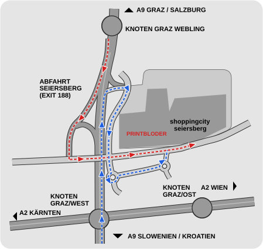

Directions & Contact
How to find us
You can reach our location in Shopping City Seiersberg via the A2 motorway, Triester Straße or through the village of Seiersberg.
In Shopping City Seiersberg you will find us on the 1st floor above Primark.
Contact
Printshop BloderSCS Seiersberg
8054 Graz
Austria
- Phone: +43 316 24 35 77
- Email: shop@printbloder.at
- Mail: to the address above

Map & directions
The map is only loaded from Google Maps after you click. Data such as your IP address is then sent to Google.